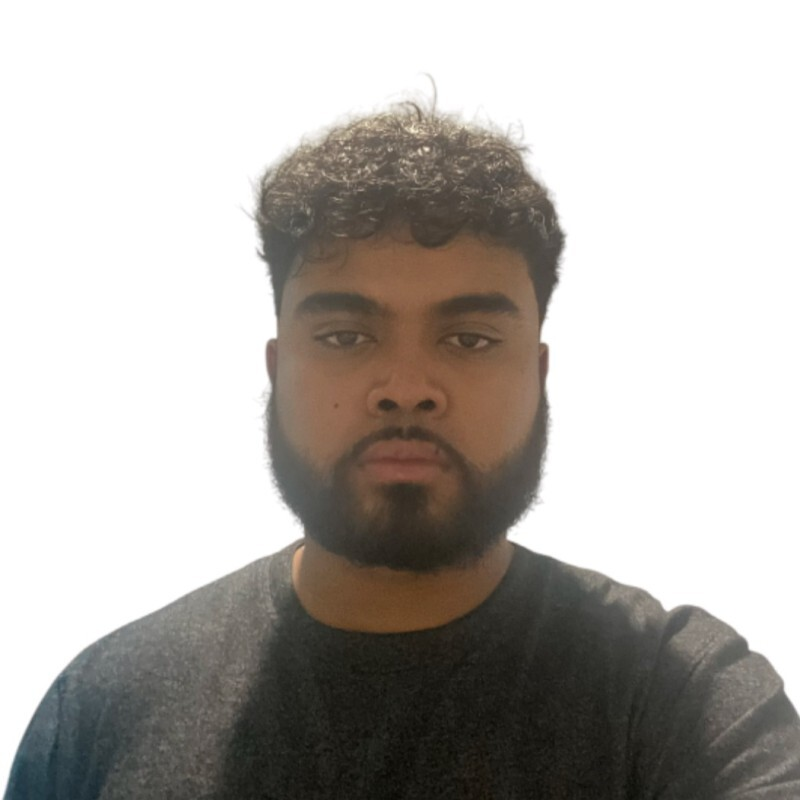

Taysir Alam
Greater Toronto Area, ON
Email: alamt10@mcmaster.ca
Education
High School: W.A. Porter C.I.
University: McMaster University (W Booth School of Engineering Practice and Technology)
Degree: B.Tech in Automation Systems Engineering Technology (Expected 2027)
Work
Hitachi Rail, Systems Design Intern
Toronto, ON - Since September 2025
- I am working on train control system requirement issues for international and light rail deployments.
Hitachi Rail Website
Alstom, Signaling Engineering Intern
Toronto, ON, July - December 2024
- Tracked design documents for GO Rail Expansion projects.
Alstom Website
Metrolinx, Co-op Student
Toronto, ON - May - August 2023 & January - April 2024
- Served as a co-op student on a Rail Operations team and a Bus Fleet Engineering team the next year.
Metrolinx Website
Hobbies
-
Hobbies: Photography, basketball, sight-seeing, and partying :D
-
Interests: Transportation, electronics, and design projects
-
Professional Associations: Engineering forums, INCOSE Systems Engineering Association, PMP.
-
Clubs: McMaster Aerial Robotics & Drone Club.
I participate in club projects related to drones and embedded systems. We will compete in Alberta against other schools.